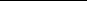

• Generate the prior based on analyst recommendations, and when estimating the factor model, use the analyst factor again based on the same information.
• Base the prior on the Z-score of certain factors, and use some of these factors again when estimating the factor model.
• Do the scenario analysis based on the past stock perfor- mance when inflation was high or low, and use the same inflation data as a factor in the factor model.
The list of possible mistakes is infinite, but the general idea is the same: Information should not be used twice. If a piece of information was used to make the prior, it should not be used in estimating the model. The information criterion we developed in Chapter 2 encapsulates this rule. In Chapter 2 we emphasized that information should not be wasted and that all information should be combined in the most efficient way. Using the same information twice is inefficient. In fact, it violates all the fundamental assump- tions of statistical inference. Thus the standard errors will be wrong if the same information is used twice.
Bayesian theory represents a major step forward from classical sta- tistical theory because it allows us to treat any variable as a random variable and assign subjective probabilities, based on qualitative or nondata information, to the variable’s potential values. Bayesian theory opens up the possibility of encapsulating such extra infor- mation in a Bayesian that amplifies the QEPM model of stock returns. In this chapter we first showed how to calculate the
Bayesian ’s prior, which summarizes and quantifies extra infor- mation that does not originate in the data set with which the factor model was estimated. This extra information can come from stock screens and rankings, buy/sell recommendations, Z-scores, or scenario analysis. We then discussed how to calculate the Bayesian
’s posterior, which summarizes all the available information by combining the prior and the factor model estimation. Having calculated the posterior, we can fully describe the distribution of Bayesian . As long as all pieces of extra information contained in the are distinct from the data used to estimate the factor model, adding Bayesian to the model upholds the information criterion. Bayesian , with its ability to widen the scope of a purely data- based factor model into diverse kinds of information, is our third source of mojo.
QUESTIONS
14.1. Parkinson’s disease affects 0.3% of the population. A new test is able to detect whether young individuals are predis- posed to the disease. The test has a type I error of 7% (when the person is not predisposed, there is a 7% chance that the test will conclude that he or she is) and a type II error of 0.1% (when the person is predisposed, there is a 0.1% chance that the test will conclude that he or she is not). In a recent testing at Georgetown University, a person tested positive for predisposition.
(a) What is the probability that the person will get Parkinson’s disease some day?
(b) ScienceWeek claims that 0.3% of the population has Parkinson’s and that 3% of those over age 65 have Parkinson’s disease. The percentage of people over age 65 in the United States is 12.4%. What’s weird about these statistics?
14.2. The probabilities for events A and B are given as follows:
P(A) = –1 , P(B) = –1 , P(A B) = –1. Find the probability of
2 3 6
event A happening conditional on event B happening, that is, P(A|B).
14.3. Suppose that the stock return r has the following conditional distribution: r| ~ N(, 1). has the following distribution:
~ N(, ).
(a) What is the expected value of r?
(b) What is the variance of r?
(c) What is the marginal distribution of r?
14.4. What is the prior? Explain the possible role of the prior in quantitative equity portfolio management (QEPM).
14.5. Explain the difference between the Bayesian approach and the classical approach to estimation.
14.6. One criticism of the Bayesian approach is that different analysts may come to different conclusions. Explain how a Bayesian statistician would respond to such criticism.
14.7. In the Bayesian framework, the ordinary least square (OLS) estimation is a special case of Bayesian analysis. Describe the prior distribution under which Bayesian analysis and an OLS estimation would produce identical results.
14.8. Suppose that the stock return r has the following conditional distribution:
r| ~ U [ — 1, + 1]
Where may take a value of 0 of 1 with equal probability and U indicates a uniform distribution. That is, the proba- bility density function of r is
1
1
1
f r 2
0
if 1 r 1 otherwise
(a) If you observe the value of r to be 1.9, what do you con- clude the value of to be?
(b) If you observe the value of r to be —0.5, what would do conclude the value of to be?
(c) Find the posterior distribution of r in each of the above cases.
14.9. The capital asset pricing model (CAPM) is a special case of the economic factor model. Suppose that we estimated the CAPM in the following form:
ri = i + i rM + Ei
Using the OLS method, we obtained the following estimates:
i
i
i
ˆi = 0.5 (0.3) ˆ = 0.9 (0.4)
The numbers inside the parentheses are standard errors.
(a) One implication of the CAPM is that the true value of
is 0. If you believe the CAPM 100%, what would be the posterior distribution of i?
(b) If you are convinced that the CAPM is not true, but if
you do not have any other prior opinion about the value of , what would be the posterior distribution of i?
(c) If you believe that there is a 50% chance that the CAPM
is correct and that there is a 50% chance that the CAPM is incorrect, what would be your posterior distribution of i?
14.10. The return of stock A is known to have the normal distribu-
tion with mean 10 and variance 25, that is,
rA ~ N(10, 25)
The return of stock B is known to have a normal distribution with a variance of 25, but the mean of the distribution is not known, that is,
rB ~ N(, 25) Assume that rA and rB are independent.
(a) A poll of 100 analysts indicates that 50 of 100 analysts
believe that stock B will outperform stock A, whereas the remaining 50 analysts believe that the opposite will happen. Considering the poll, what is your best guess at the value ?
(b) Suppose that 70 of 100 analysts believe that stock B will outperform stock A. Find the value of that is consis- tent with the poll.
(c) If the variance of rB is not known, how would you change your answers to parts (a) and (b)?
(d) If rA and rB are not independent, how would you change your answers to parts (a) and (b)?
(e) If the distribution of rA is not known, how would you change your answers to parts (a) and (b)?
14.11. An event tree is useful in identifying different scenarios. Draw an event tree for a scenario in which the stock return depends on the following two outcomes: (a) which party (Republican, Democratic, or Green) wins in the next U.S. presidential election, and (b) whether NASA’s spaceship lands on Venus.
14.12. The return of stock A heavily depends on the oil price. The return of stock A(rA) conditional on the oil price (G) is given as follows:
If G< 30, then rA ~ U[—10, 0] If 30 三 G < 40, then rA ~ U[0, 10] If 40 三 G < 50, then rA ~ U[10, 20]
If G 2: 50, then rA ~ U[20, 30]
(a) Suppose that the probability of each of the four scenarios happening is 25%. Describe the distribution of rA.
(b) Estimation of an economic factor model suggests that
rA ~ N(10, 25)
Treating the distribution given in part (a) as a prior, describe the posterior distribution of rA.
14.13. The posterior mean is the weighted average of the prior mean and the OLS estimate, where the weights are the pre- cisions. Explain the similarity between this formula and the formula for the optimal portfolio weights in Chapter 9. Is the similarity a coincidence?
14.14. The posterior computation can be carried out using a pseudo- random-number generator. This exercise outlines the steps.
(a) Show that if x is a random draw from the uniform dis- tribution U[0, 1], then y = —1(x) may be considered a random draw from the standard normal distribution N(0, 1).
(b) Show that if y is a random draw from N(0, 1), then
z = + y is a random draw from N( , 2).
(c) Let z1, …, z J be random draws from N(, 2). Show that the expected value of a function of z, f (z), can be approximated as
J
J
J
E f z 1
f zj
J
J
J
j1
(d) Let p( ) be the prior and l( ) be the likelihood. Show that
Pa b
Pa b
Pa b
l p d

l p d
(e) Let 1, …, J be the random draws from the prior. Show that the probability in part (d) can be approximated by
1 J
jl j p j
J j1
J
J
J
j1
j1
j1
1 J
l j p j
14.15. The Bayesian approach can be very powerful in combining qualitative information with quantitative data. However, when two sets of quantitative data are to be combined, there is a danger of double-counting the same piece of data in the prior and in the estimation. What would be the consequence of such double-counting?